RECOMMENDED ON WINDOWS
Microsoft Store
Microsoft signs the Store package and Store manages its updates. Install it, then open Offhand Companion from the Start menu.
GET IT FROMMicrosoft StoreThe Microsoft Store build is the simplest Windows option. The portable release supports direct installation and Linux/Wine.
Microsoft signs the Store package and Store manages its updates. Install it, then open Offhand Companion from the Start menu.
GET IT FROMMicrosoft StoreExtract the ZIP to a folder you control, then run Offhand.exe. The archive also contains the license and instructions.
Verify a portable download against the published SHA-256 file and GitHub build provenance. Advanced users can review or compile the MIT-licensed source.
Keep automatic spanning off until this first test succeeds. The numbered markers match the instructions beside the image.
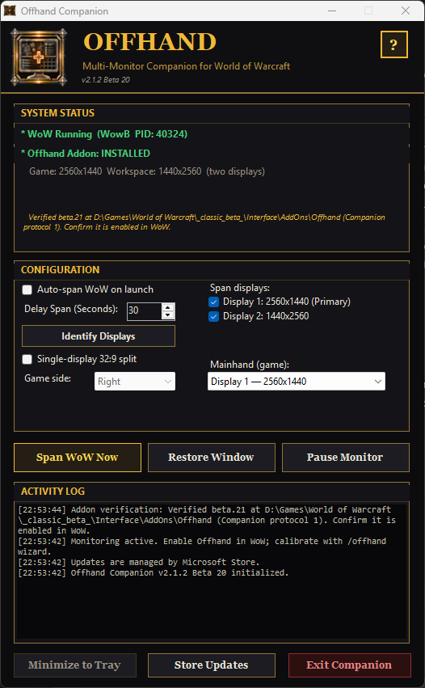
12345Choose Options → Graphics → Display Mode → Windowed, then open Companion. Under System Status, confirm that WoW is running and Offhand is installed.
Select Identify Displays. Windows briefly places a large number on each screen.
Tick the game and workspace displays, then choose the game display under Mainhand (game). Leave auto-span off for now.
Select Span WoW Now. Confirm that the game is on Mainhand and the Offhand workspace is on the other display.
If WoW was already at the character UI, type /reload. Then open /offhand guide, choose Use Companion, and complete the guided calibration.
You do not need to memorize these screens. Follow the buttons in order and use this visual reference if you want to know what comes next.
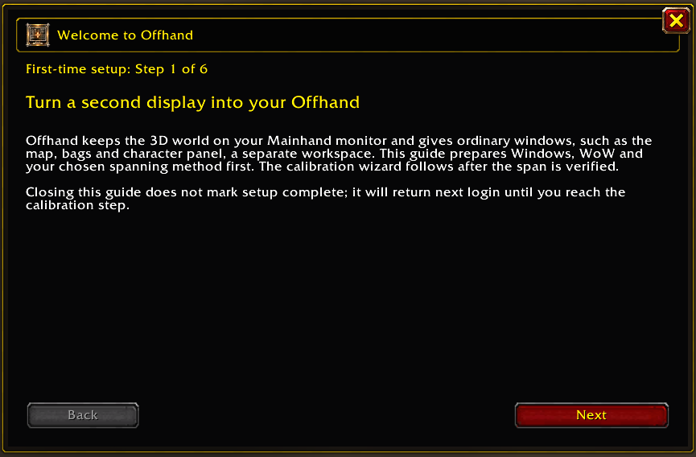
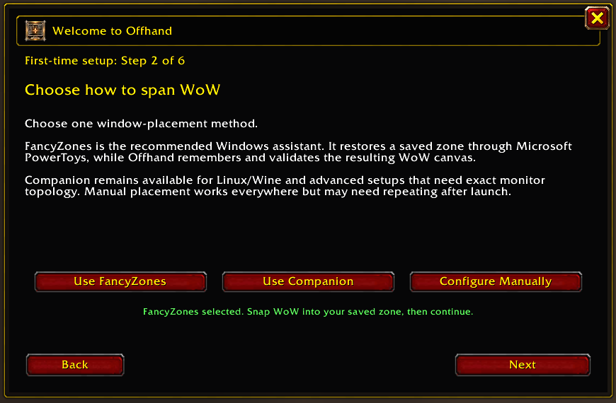
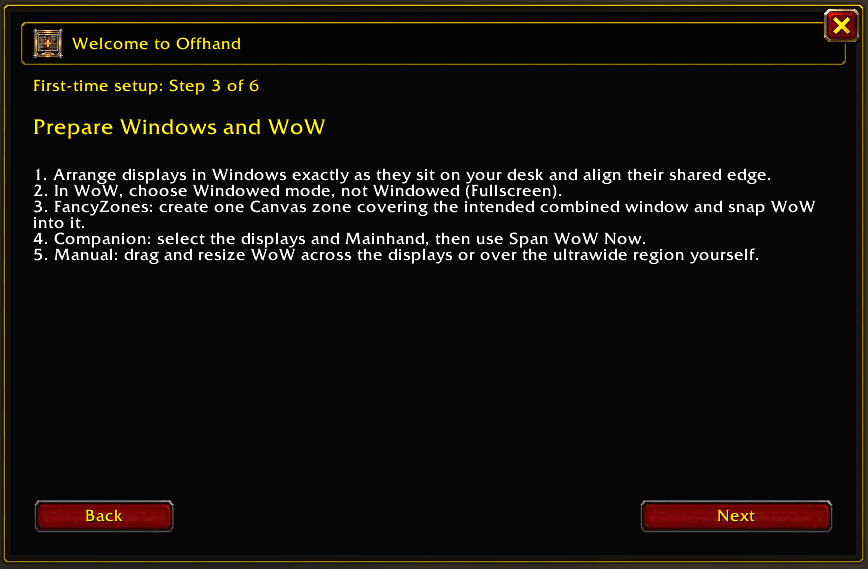
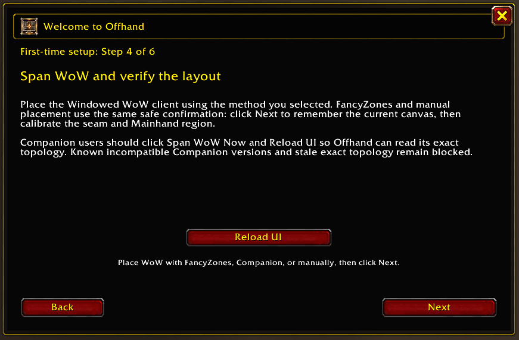
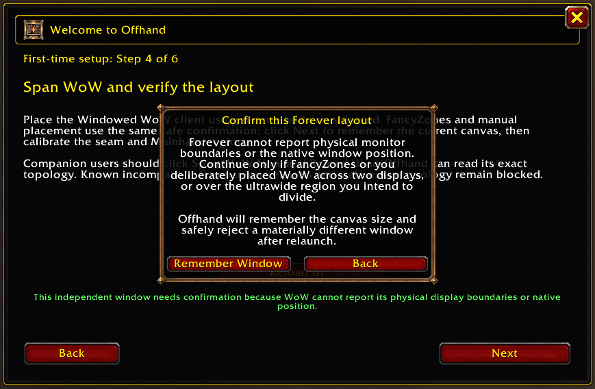
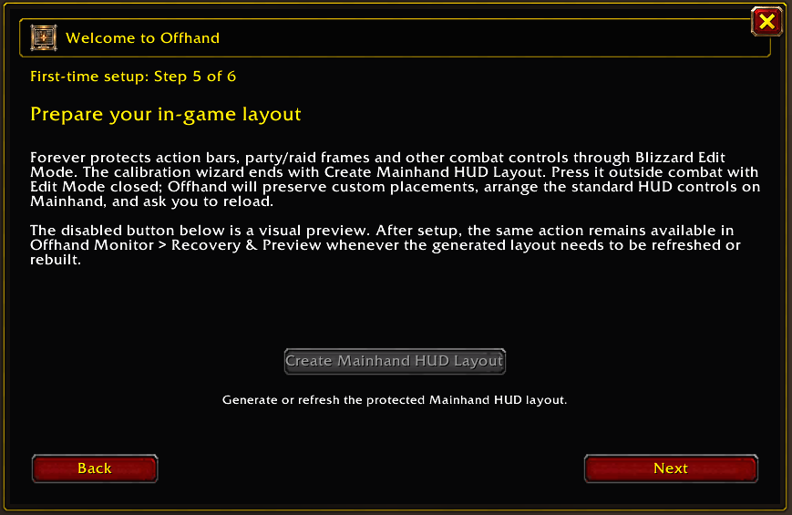
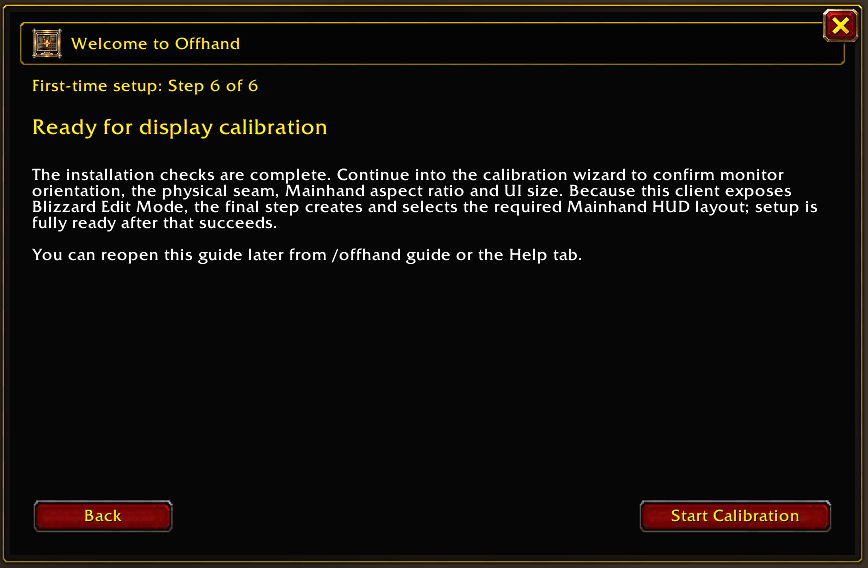
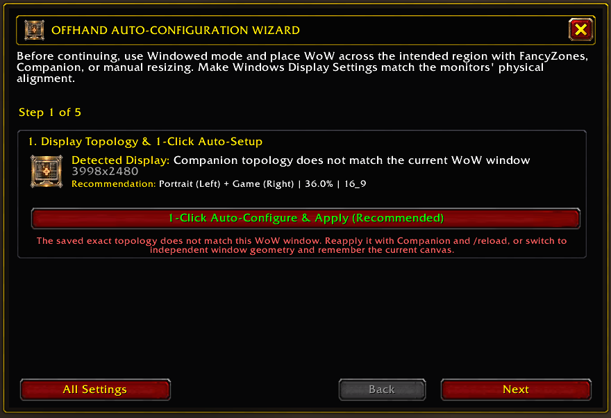
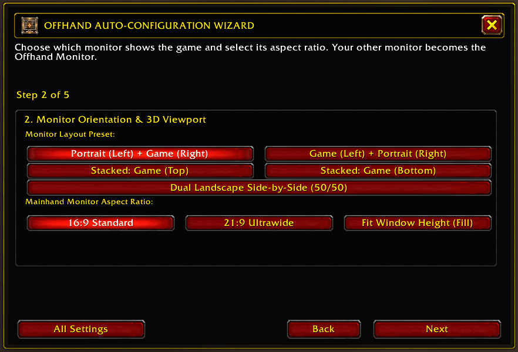
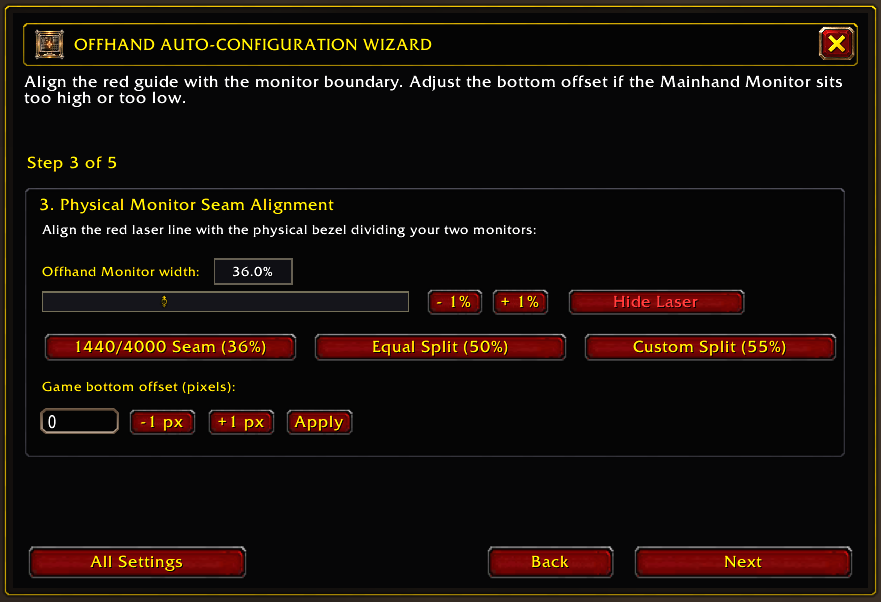
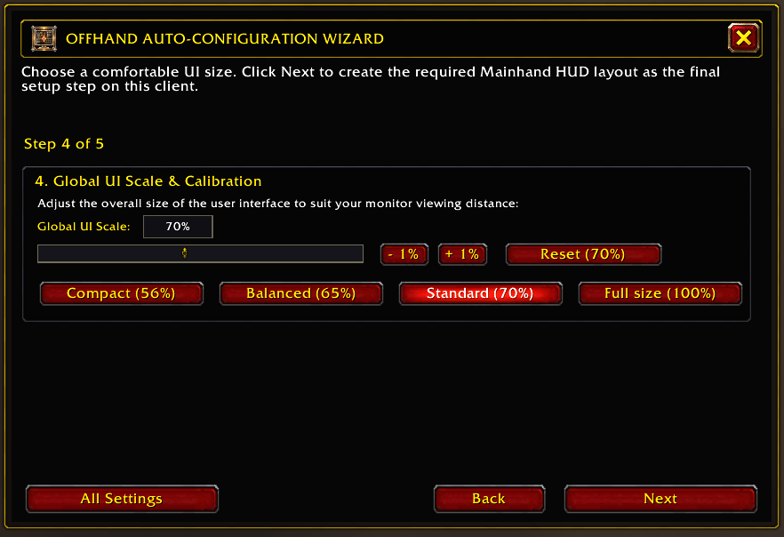
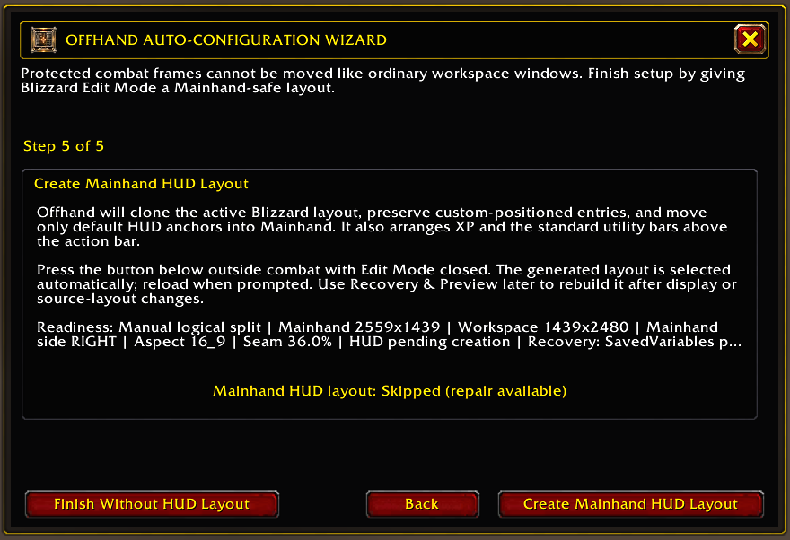
The five-step first run above is enough for most users. Open this reference only when you need automation, recovery, or an uncommon layout.
Shows whether WoW is running and whether Offhand is installed. Use it as the first diagnostic check.
Temporarily labels each physical display so you can select the correct pair and Mainhand.
Defines the displays included in the span. A normal multi-monitor setup uses exactly two.
Marks the display that receives the protected game viewport. The other selected display becomes the Offhand workspace.
Divides one super-ultrawide into a game side and workspace side. Leave it off when using two physical displays.
Applies the selected borderless rectangle immediately. Use this for first setup and one-shot placement.
Watches for WoW to launch, waits for the selected delay, then applies the saved span. Enable it only after a successful manual test.
Returns WoW to a bordered, movable window on the Mainhand display.
Temporarily suspends automatic placement and recovery without discarding your selected topology.
Minimize keeps active monitoring in the tray. Exit leaves the current span in place but stops automation. Update checks are user initiated. Select ? for the built-in guide.
Open Companion after WoW, select Span WoW Now, then select Exit. The window remains in place. This is the lowest-maintenance Companion workflow.
Enable Automatically span WoW on launch and leave Companion in the tray. Adjust the delay only if WoW is still changing display mode when the span is applied.
Leave Companion running when you want it to react to a disconnected monitor, repair the topology handoff, or maintain a Forever compatibility bridge that /offhand diag reports is needed.
Select Restore Window, disable dual-monitor mode in /offhand, then resize or maximize WoW normally. Use /offhand gather if an ordinary panel is inaccessible.
Companion refuses to collapse a two-display profile onto the remaining screen. While active, it restores a bordered Mainhand window instead. Reconnect the display or select the current topology before spanning again.
Select Restore Window, use Identify Displays, confirm both selected displays and Mainhand, then apply Span WoW Now again. Re-run /offhand guide only if the intended canvas itself changed.
Type /reload after a corrected span so the addon reads the current topology. If the issue remains, run /offhand diag and include its geometry and persistence sources with your support report.
Companion identifies the visible WoW desktop window, changes its border and dimensions, and gives Offhand the selected display geometry. It does not request administrator access, install a service or driver, inject code, read WoW memory, automate gameplay, collect telemetry, or download and execute code.
Store installations use Microsoft Store for updates. Portable installations contact GitHub only when you select Check for Updates.
The Store package is Microsoft signed. The separate GitHub executable is unsigned, so browsers or scanners may show a reputation or heuristic warning. A clean scan does not prove safety, and a generic reputation warning is not the same as a named malware detection.
For this workflow, Offhand Companion and FancyZones perform a comparable desktop-window-management role. They resize or reposition an ordinary Windowed WoW window and are designed not to automate gameplay, send game input, inspect game memory, inject code, or modify game files.
This is not a guarantee of approval or account safety. Microsoft authorship, Microsoft Store availability, open-source code, security scans, and the absence of gameplay automation do not constitute Blizzard authorization. Blizzard alone interprets and enforces its agreements, and its published EULA states that the platform may monitor for unauthorized third-party programs. Use any desktop utility at your own discretion and stop using it if Blizzard guidance changes.
Read Blizzard's current EULA · Read Blizzard's anti-cheating agreement